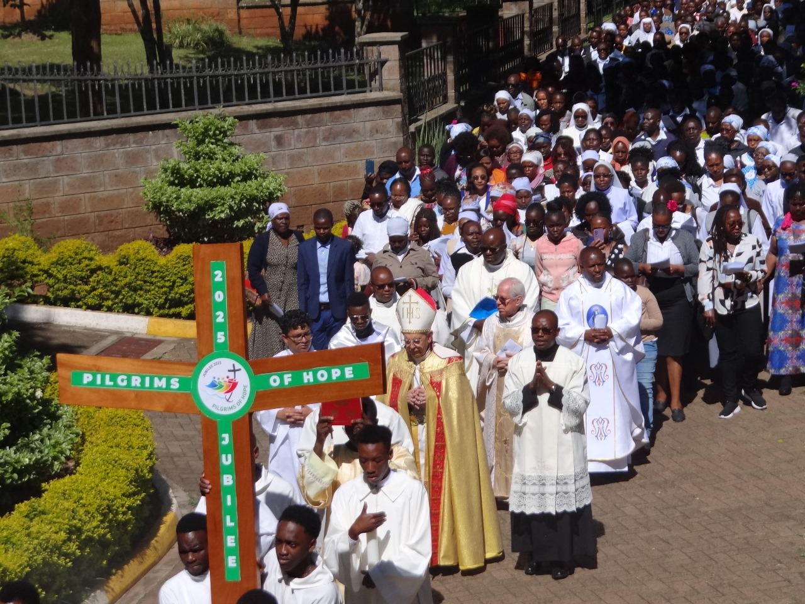
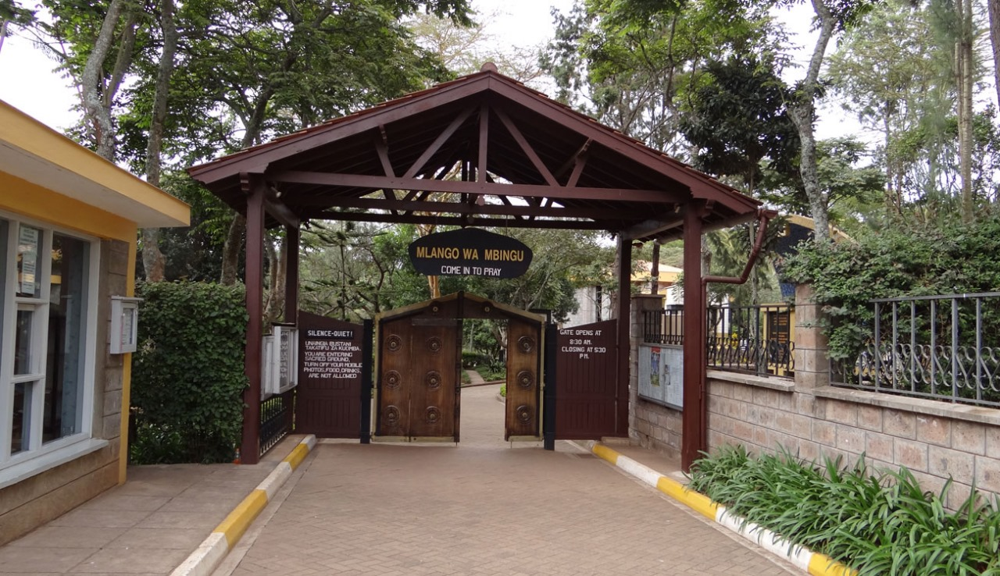

Palm Sunday: March 29, 2026: (Animated By Oblates Community)
The celebration begins at the car park near the Consolata Hall at 10.00 a.m., with the blessing
of the palms, followed by the procession to the Main Church.
HOLY THURSDAY: APRIL 2, 2026 (Animated By Dimesse Sisters -Karen)
There will be Chrism Mass at the Holy Family Basilica at 10:00am presided over by His Grace
Archbishop Philip Anyolo while at the Resurrection Garden, the Lord’s Supper celebration begins
at 5.30 p.m. in the MAIN CHURCH and it concludes with a solemn procession to the Blessed
Sacrament Chapel.
GOOD FRIDAY: APRIL 3, 2026 (Animated By Consolata Seminary)
The Garden opens at 8.00 a.m. for private prayers. There will be Priests available for
Confessions starting from 10.00 a.m.
The Solemn Way of The Cross begins at 2 p.m. starting at the LAST SUPPER CHAPEL and ending in
the Main Church.
At 3pm, The Solemn Liturgy of the Passion of Jesus Christ takes place in the MAIN CHURCH with
the singing of the Passion of Christ, the Veneration of the Cross-and the Holy Communion.
The Solemn Way of The Cross and the Liturgy of the Passion of Jesus Christ will be presided over
by His Grace Philip Anyolo Archbishop of Nairobi metroplitan
HOLY SATURDAY: Easter Vigil on APRIL 4, 2026 (Animated By Dimesse
Sisters-Karen)
The Liturgy on this day begins at 6.45 p.m. outside the MAIN CHURCH at the foot of the Cross-,
with the blessing of the fire and the procession of the Easter Candle to the Main Church.
EASTER SUNDAY: APRIL 5, 2026 (Animated by Oblates Community)
Holy Mass at 10 a.m. in the MAIN CHURCH
**Priests will be available for the sacrament of Reconciliation throughout the holy
week. Kindly engage the office**

This month's recollection will be on 25th April 2026 The theme is : Echoes in the Eucharist: the word and the Sacrament by Rev Fr. Christopher Letikirich
On Sunday 15th of November, we will have 11th anniversary mass of the late Reverend Ottavio Santoro the Co-Founder of Resurrection Garden here at the main church of the Resurrection Garden at 10 am. All are welcome